Install H-series hardware
Contributors
 Download PDF of this page
Download PDF of this page
Before you get started with using NetApp HCI, you should install the storage and compute nodes correctly.
| See the poster for a visual representation of the instructions. |
Workflow diagrams
The workflow diagrams here provide a high-level overview of the installation steps. The steps vary slightly depending on the H-series model.
H410C and H410S
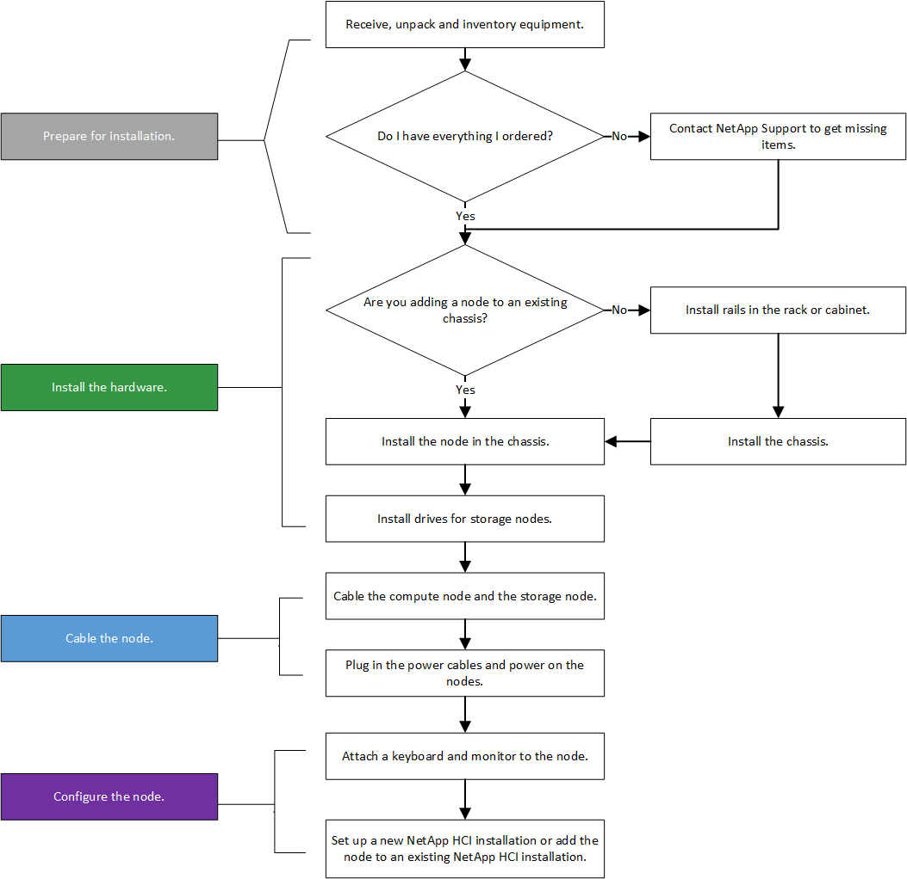
H610C and H615C
| The terms "node" and "chassis" are used interchangeably in the case of H610C and H615C, because node and chassis are not separate components unlike in the case of a 2U, four-node chassis. |
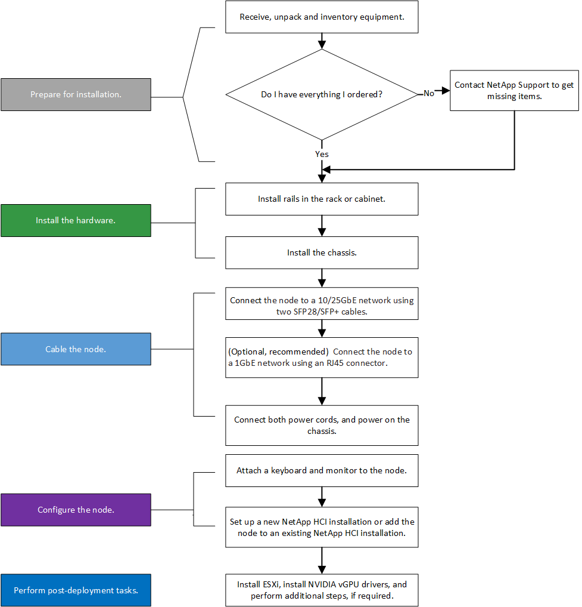
H610S
| The terms "node" and "chassis" are used interchangeably in the case of H610C and H615C, because node and chassis are not separate components unlike in the case of a 2U, four-node chassis. |
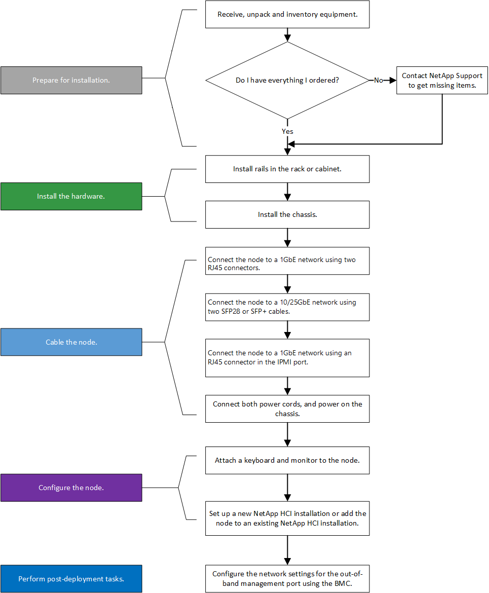
Prepare for installation
In preparation for installation, inventory the hardware that was shipped to you, and contact NetApp Support if any of the items are missing.
Ensure that you have the following items at your installation location:
-
Rack space for the system.
| Node type | Rack space |
|---|---|
H410C and H410S nodes |
Two rack unit (2U) |
H610C node |
2U |
H615C and H610S nodes |
One rack unit (1U) |
-
SFP28/SFP+ direct-attach cables or transceivers
-
CAT5e or higher cables with RJ45 connector
-
A keyboard, video, mouse (KVM) switch to configure your system
-
USB stick (optional)
| The hardware that is shipped to you depends on what you order. A new 2U, four-node order includes the chassis, bezel, slide rail kit, drives for storage nodes, storage and compute nodes, and power cables (two per chassis). If you order H610S storage nodes, the drives will come installed in the chassis. |
| While installing the hardware, ensure that you remove all packing material and wrapping from the unit. This will prevent the nodes from overheating and shutting down. |
Install the rails
The hardware order that was shipped to you includes a set of slide rails. You will need a screwdriver to complete the rail installation. The installation steps vary slightly for each node model.
| Install hardware from the bottom of the rack up to the top to prevent the equipment from toppling over. If your rack includes stabilizing devices, install them before you install the hardware. |
H410C and H410S
H410C and H410S nodes are installed in 2U, four-node H-Series chassis, which is shipped with two sets of adapters. If you want to install the chassis in a rack with round holes, use the adapters appropriate for a rack with round holes. The rails for H410C and H410S nodes fit a rack between 29 inches and 33.5 inches in depth. When the rail is fully contracted, it is 28 inches long, and the front and rear sections of the rail are held together by only one screw.
| If you install the chassis onto a fully contracted rail, the front and rear sections of the rail might separate. |
-
Align the front of the rail with the holes on the front post of the rack.
-
Push the hooks on the front of the rail into the holes on the front post of the rack and then down, until the spring-loaded pegs snap into the rack holes.
-
Attach the rail to the rack with screws. Here is an illustration of the left rail being attached to the front of the rack:

-
Extend the rear section of the rail to the rear post of the rack.
-
Align the hooks on the rear of the rail with the appropriate holes on the rear post ensuring that the front and the back of the rail are on the same level.
-
Mount the rear of the rail onto the rack, and secure the rail with screws.
-
Perform all the above steps for the other side of the rack.
H610C
Here is an illustration for installing rails for an H61OC compute node:

H610S and H615C
Here is an illustration for installing rails for an H610S storage node or an H615C compute node:
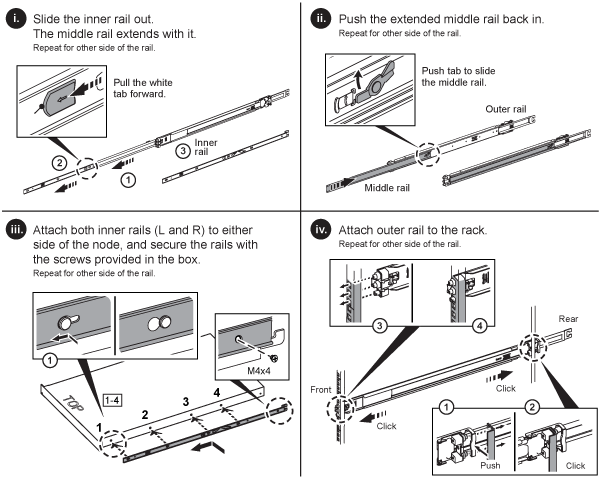
| There are left and right rails on the H610S and H615C. Position the screw hole towards the bottom so that the H610S/H615C thumbscrew can secure the chassis to the rail. |
Install the node/chassis
You install the H410C compute node and H410S storage node in a 2U, four-node chassis. For H610C, H615C, and H610S, install the chassis/node directly onto the rails in the rack.
| Starting with NetApp HCI 1.8, you can set up a storage cluster with two or three storage nodes. |
| Remove all the packing material and wrapping from the unit. This prevents the nodes from overheating and shutting down. |
H410C and H410S nodes
-
Install the H410C and H410S nodes in the chassis. Here is a rear-view example of a chassis with four nodes installed:

-
Install drives for H410S storage nodes.

H610C node/chassis
In the case of H610C, the terms "node" and "chassis" are used interchangeably because node and chassis are not separate components, unlike in the case of the 2U, four-node chassis.
Here is an illustration for installing the node/chassis in the rack:
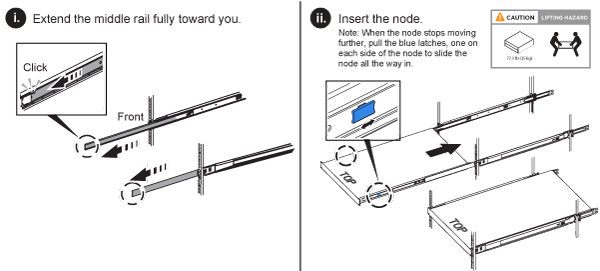
H610S and H615C node/chassis
In the case of H615C and H610S, the terms "node" and "chassis" are used interchangeably because node and chassis are not separate components, unlike in the case of the 2U, four-node chassis.
Here is an illustration for installing the node/chassis in the rack:

Install the switches
If you want to use Mellanox SN2010, SN2100, and SN2700 switches in your NetApp HCI installation, follow the instructions provided here to install and cable the switches:
Cable the nodes
If you are adding nodes to an existing NetApp HCI installation, ensure that the cabling and network configuration of the nodes that you add are identical to the existing installation.
| Ensure that the airflow vents at the rear of the chassis are not blocked by cables or labels. This can lead to premature component failures due to overheating. |
H410C compute node and H410S storage node
You have two options for cabling the H410C node: using two cables or using six cables.
Here is the two-cable configuration:
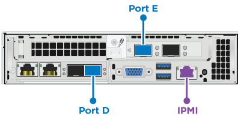
 For ports D and E, connect two SFP28/SFP+ cables or transceivers for shared management, virtual machines, and storage connectivity.
For ports D and E, connect two SFP28/SFP+ cables or transceivers for shared management, virtual machines, and storage connectivity.
 (Optional, recommended) Connect a CAT5e cable in the IPMI port for out-of-band management connectivity.
(Optional, recommended) Connect a CAT5e cable in the IPMI port for out-of-band management connectivity.
Here is the six-cable configuration:
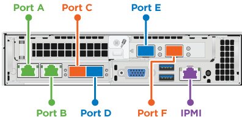
 For ports A and B, connect two CAT5e or higher cables in ports A and B for management connectivity.
For ports A and B, connect two CAT5e or higher cables in ports A and B for management connectivity.
 For ports C and F, connect two SFP28/SFP+ cables or transceivers for virtual machine connectivity.
For ports C and F, connect two SFP28/SFP+ cables or transceivers for virtual machine connectivity.
For ports D and E, connect two SFP28/SFP+ cables or transceivers for storage connectivity.
(Optional, recommended) Connect a CAT5e cable in the IPMI port for out-of-band management connectivity.
Here is the cabling for the H410S node:
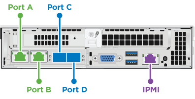
For ports A and B, connect two CAT5e or higher cables in ports A and B for management connectivity.
For ports C and D, connect two SFP28/SFP+ cables or transceivers for storage connectivity.
(Optional, recommended) Connect a CAT5e cable in the IPMI port for out-of-band management connectivity.
After you cable the nodes, connect the power cords to the two power supply units per chassis and plug them into 240V PDU or power outlet.
H610C compute node
Here is the cabling for the H610C node:
| H610C nodes are deployed only in the two-cable configuration. Ensure that all the VLANs are present on ports C and D. |
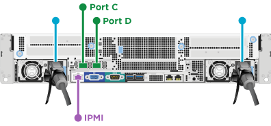
 For ports C and D, connect the node to a 10/25GbE network using two SFP28/SFP+ cables.
For ports C and D, connect the node to a 10/25GbE network using two SFP28/SFP+ cables.
(Optional, recommended) Connect the node to a 1GbE network using an RJ45 connector in the IPMI port.
 Connect both power cables to the node, and plug the power cables to a 200‐240V power outlet.
Connect both power cables to the node, and plug the power cables to a 200‐240V power outlet.
H615C compute node
Here is the cabling for the H615C node:
| H615C nodes are deployed only in the two-cable configuration. Ensure that all the VLANs are present on ports A and B. |

For ports A and B, connect the node to a 10/25GbE network using two SFP28/SFP+ cables.
(Optional, recommended) Connect the node to a 1GbE network using an RJ45 connector in the IPMI port.
Connect both power cables to the node, and plug the power cables to a 110-140V power outlet.
H610S storage node
Here is the cabling for the H610S node:
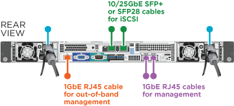
Connect the node to a 1GbE network using two RJ45 connector in the IPMI port.
Connect the node to a 10/25GbE network using
two SFP28 or SFP+ cables.
Connect the node to a 1GbE network using
an RJ45 connector in the IPMI port.
Connect both power cables to the node.
Power on the nodes
It takes approximately six minutes for the nodes to boot.
Here is an illustration that shows the power button on the NetApp HCI 2U chassis:
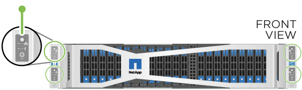
Here is an illustration that shows the power button on the H610C node:
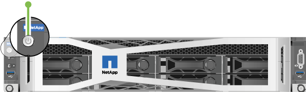
Here is an illustration that shows the power button on the H615C and H610S nodes:
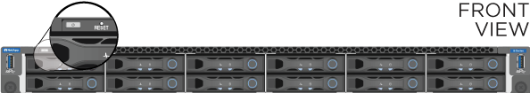
Configure NetApp HCI
Choose from one of the following options:
New NetApp HCI installation
-
Configure an IPv4 address on the management network (Bond1G) on one NetApp HCI storage node.
If you are using DHCP on the management network, you can connect to the DHCP-acquired IPv4 address of the storage system. -
Plug in a keyboard, video, mouse (KVM) to the back of one storage node.
-
Configure the IP address, subnet mask, and gateway address for Bond1G in the user interface. You can also configure a VLAN ID for the Bond1G network.
-
-
Using a supported web browser (Mozilla Firefox, Google Chrome, or Microsoft Edge), navigate to the NetApp Deployment Engine by connecting to the IPv4 address that you configured in Step 1.
-
Use the NetApp Deployment Engine user interface (UI) to configure NetApp HCI.
All the other NetApp HCI nodes will be discovered automatically.
Expand an existing NetApp HCI installation
-
Open a web browser and browse to the IP address of the management node.
-
Log in to NetApp Hybrid Cloud Control by providing the NetApp HCI storage cluster administrator credentials.
-
Follow the steps in the wizard to add storage and/or compute nodes to your NetApp HCI installation.
To add H410C compute nodes, the existing installation must run NetApp HCI 1.4 or later. To add H615C compute nodes, the existing installation must run NetApp HCI 1.7 or later. The newly installed NetApp HCI nodes on the same network will be discovered automatically.
Perform post-configuration tasks
Depending on the type of node you have, you might need to perform additional steps after you install the hardware and configure NetApp HCI.
H610C node
Install the GPU drivers in ESXi for each H610C node that you installed, and validate their functionality.
H615C and H610S nodes
-
Use a web browser and navigate to the default BMC IP address:
192.168.0.120 -
Log in using user name
rootand passwordcalvin. -
From the node management screen, navigate to Settings > Network Settings, and configure the network parameters for the out-of-band management port.
If your H615C node has GPUs in it, install GPU drivers in ESXi for each H615C node that you installed, and validate their functionality.
Find more information
-
NetApp Configuration Advisor 5.8.1 or later network validation tool
 Edit on GitHub
Edit on GitHub